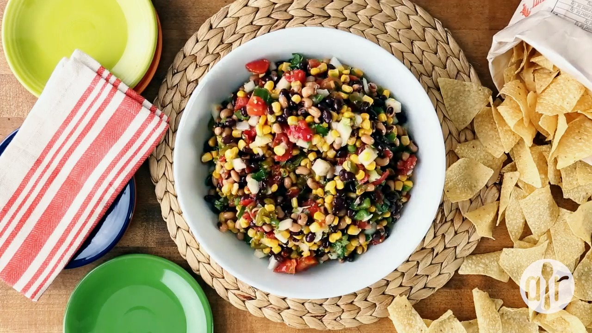

Cowboy Caviar

About this recipe
Cowboy caviar, a crowd-pleasing and incredibly easy appetizer that comes together in minutes, will quickly
earn a permanent spot in your recipe box.
Ingredients
- 1 15.5 oz. can black beans, drained
- 1 15.5 oz. can black-eyed peas, drained
- 1 14.5 oz. can diced tomatoes, drained
- 2 cups frozen corn kernels, thawed
- 1/2 medium onion, diced
- 1/4 medium green bell pepper, finely chopped
- 1/2 cup chopped pickled jalapeno peppers
- 1/2 tsp. garlic salt
- 1 cup Italian salad dressing
- 3/4 cup chopped cilantro
Steps
- Mix black beans, black-eyed peas, diced tomatoes, corn, onion, bell pepper, and jalapeno peppers
together in a large bowl. Season with garlic salt, then pour in Italian salad dressing and
add cilantro. Mix until well coated.
- Refrigerate until flavors have melded, at least 20 minutes or up to 3 days, before serving.